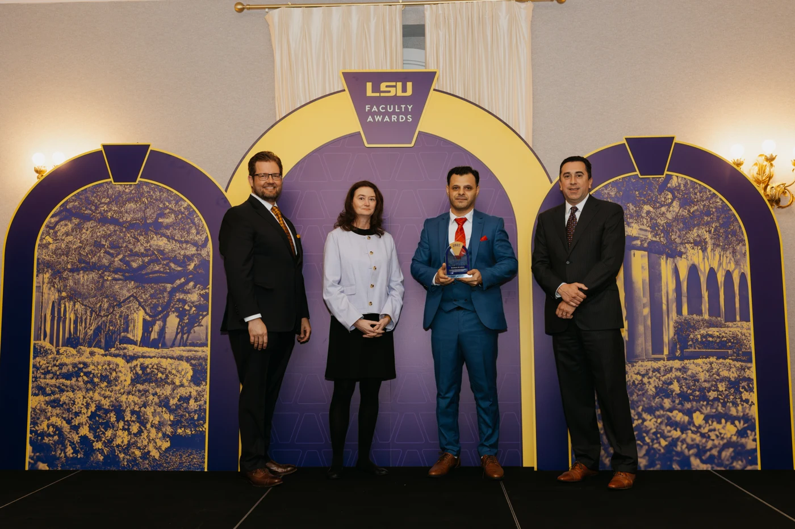

University College Alumni Association Teaching Assistant Award
This award recognizes outstanding teaching ability and service to students and emphasizes the important role teaching assistants play in providing quality academic instruction. It is presented annually to only two graduate students across LSU.